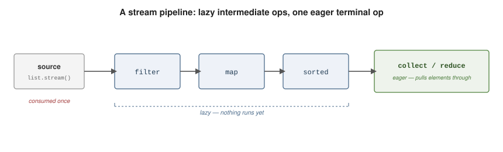

Streams and Collectors
|
This content was generated with the assistance of AI and should be verified against the official documentation before being relied on in production. |
A Stream<T>
is a pipeline that carries elements from a source through zero or more lazy intermediate operations to
exactly one eager terminal operation. It stores nothing, never mutates its source, and — for most
sources — can be traversed only once. This page follows
dev.java: The Stream API and the
Java Tutorials Aggregate Operations lesson.
What a Stream Is
import java.util.*;
import java.util.stream.*;
List<String> words = List.of("gamma", "alpha", "beta", "alpha");
List<String> result = words.stream() // source
.distinct() // intermediate (lazy)
.filter(w -> w.length() == 5) // intermediate (lazy)
.sorted() // intermediate (lazy)
.toList(); // terminal (eager) -> [alpha, gamma]A stream comes from many kinds of source:
import java.util.*;
import java.util.stream.*;
import java.nio.file.*;
Stream<String> fromCollection = List.of("a", "b").stream();
Stream<Integer> fromValues = Stream.of(1, 2, 3);
IntStream fromRange = IntStream.range(0, 10); // 0..9
Stream<Integer> fromArray = Arrays.stream(new Integer[] {1, 2, 3});
// Files.lines yields a stream backed by an open file -- close it
try (Stream<String> lines = Files.lines(Path.of("in.txt"))) {
long nonBlank = lines.filter(s -> !s.isBlank()).count();
}See dev.java: Creating Streams. Nothing executes until the terminal operation runs; a stream that has already been used throws on any further operation:
Stream<String> s = Stream.of("x", "y");
s.forEach(System.out::println);
s.count(); // IllegalStateException: stream has already been operated upon or closedIntermediate Operations
Each returns a new stream and schedules work without doing it. See dev.java: Intermediate Operations.
import java.util.*;
import java.util.stream.*;
List<String> picked = Stream.of("apple", "banana", "cherry", "date", "elderberry")
.filter(w -> w.length() > 4) // keep matching elements
.map(String::toUpperCase) // transform each element
.sorted() // natural order
.limit(3) // first 3 only
.toList();
// flatMap: one-to-many, then flattened into a single stream
List<List<Integer>> nested = List.of(List.of(1, 2), List.of(3, 4));
List<Integer> flat = nested.stream().flatMap(List::stream).toList(); // [1, 2, 3, 4]
// mapMulti (Java 16+): push replacement elements into a sink, no per-element stream
List<Integer> expanded = Stream.of(1, 2, 3)
.<Integer>mapMulti((n, sink) -> { sink.accept(n); sink.accept(n * 10); })
.toList(); // [1, 10, 2, 20, 3, 30]
// takeWhile / dropWhile: stop or start at the first element that fails the predicate
List<Integer> taken = Stream.of(1, 2, 3, 4, 1).takeWhile(n -> n < 4).toList(); // [1, 2, 3]
List<Integer> dropped = Stream.of(1, 2, 3, 4, 1).dropWhile(n -> n < 4).toList(); // [4, 1]
// skip and distinct
List<Integer> tail = IntStream.rangeClosed(1, 10).boxed().distinct().skip(7).toList(); // [8, 9, 10]
// peek: observation only (logging/debugging), never for real side effects
Stream.of("a", "b").peek(x -> System.out.println("saw " + x)).toList();Terminal Operations
The terminal operation runs the pipeline and produces a result or a side effect. See dev.java: Terminal Operations and Reduction Operations.
import java.util.*;
import java.util.stream.*;
List<Integer> nums = IntStream.rangeClosed(1, 10).boxed().toList();
long howManyEven = nums.stream().filter(n -> n % 2 == 0).count();
boolean anyBig = nums.stream().anyMatch(n -> n > 9);
boolean allPositive = nums.stream().allMatch(n -> n > 0);
boolean noNegatives = nums.stream().noneMatch(n -> n < 0);
Optional<Integer> firstEven = nums.stream().filter(n -> n % 2 == 0).findFirst();
Optional<Integer> anyEven = nums.stream().filter(n -> n % 2 == 0).findAny();
int sum = nums.stream().reduce(0, Integer::sum); // identity + accumulator
Optional<Integer> max = nums.stream().reduce(Integer::max); // no identity -> Optional
List<Integer> squares = nums.stream().map(n -> n * n).toList(); // unmodifiable list
Integer[] asArray = nums.stream().toArray(Integer[]::new);
nums.forEach(System.out::println);findFirst, findAny, and the no-identity reduce return Optional
because the stream may be empty. toList() (Java 16) is the concise replacement for
collect(Collectors.toList()) and returns an unmodifiable list.
Collectors
Collectors
supplies recipes for the collect terminal operation: accumulating into collections, maps, strings, or
summary values, with optional downstream collectors that post-process each group. See
dev.java: Collecting the Result of a Stream.
import static java.util.stream.Collectors.*;
import java.util.*;
record Employee(String name, String dept, int salary) { }
List<Employee> staff = List.of(
new Employee("Ada", "ENG", 120),
new Employee("Bo", "ENG", 100),
new Employee("Cy", "OPS", 90),
new Employee("Di", "OPS", 95));
List<String> names = staff.stream().map(Employee::name).collect(toList());
Set<String> depts = staff.stream().map(Employee::dept).collect(toSet());
List<String> frozenNames = staff.stream().map(Employee::name).collect(toUnmodifiableList());
Map<String, Integer> salaryByName = staff.stream().collect(toMap(Employee::name, Employee::salary));
// groupingBy, with and without a downstream collector
Map<String, List<Employee>> byDept = staff.stream().collect(groupingBy(Employee::dept));
Map<String, Long> headcount = staff.stream().collect(groupingBy(Employee::dept, counting()));
Map<String, Double> avgSalary = staff.stream()
.collect(groupingBy(Employee::dept, averagingDouble(Employee::salary)));
Map<String, List<String>> namesByDept = staff.stream()
.collect(groupingBy(Employee::dept, mapping(Employee::name, toList())));
// partitioningBy: a boolean split into keys true and false
Map<Boolean, List<Employee>> wellPaid = staff.stream()
.collect(partitioningBy(e -> e.salary() >= 100));
String roster = staff.stream().map(Employee::name).collect(joining(", ", "[", "]"));
int totalPay = staff.stream().collect(summingInt(Employee::salary));
// teeing (Java 12): run two collectors over the same stream, then merge their results
double meanPay = staff.stream().collect(teeing(
summingDouble(Employee::salary), counting(), (total, n) -> total / n));Primitive, Infinite, and Parallel Streams
IntStream, LongStream, and DoubleStream avoid boxing and add numeric terminals such as sum,
average, and
summaryStatistics.
import java.util.*;
import java.util.stream.*;
IntSummaryStatistics stats = IntStream.rangeClosed(1, 100).summaryStatistics();
long count = stats.getCount();
int hi = stats.getMax();
double mean = stats.getAverage();
int sum = IntStream.of(3, 1, 4, 1, 5).sum();
List<Integer> boxed = IntStream.range(0, 5).boxed().toList(); // Stream<Integer>
int fromObjects = Stream.of("a", "bb", "ccc").mapToInt(String::length).sum();
// infinite streams must be bounded by a short-circuiting operation
List<Integer> powers = Stream.iterate(1, n -> n * 2).limit(10).toList();
List<Double> randoms = Stream.generate(Math::random).limit(3).toList();
List<Integer> countdown = Stream.iterate(10, n -> n > 0, n -> n - 1).toList(); // bounded form (Java 9)Adding parallel() (or Collection.parallelStream()) splits the work across the common
ForkJoinPool. It pays off only when the data is large, the per-element work is CPU-bound, the source
splits cheaply (arrays, ArrayList, IntStream.range), and every lambda is stateless and
side-effect-free. For small or I/O-bound work it is usually slower. See
dev.java: Parallel Streams.
import java.util.stream.LongStream;
long primes = LongStream.rangeClosed(2, 1_000_000)
.parallel()
.filter(MyMath::isPrime)
.count();For a custom intermediate operation that filter/map/flatMap cannot express — sliding windows,
fold-and-emit, bounded look-ahead — implement
Stream.Gatherer
and apply it with stream.gather(...).
The Pipeline
The pipeline stays lazy up to the terminal operation, which then pulls every element through in a single pass over the source:

See Also
-
The Collections Framework — the
Collection.stream()sources and theList/Set/Maptargets that collectors build. -
Lambdas and Method References — the syntax every
filter/map/reduceargument is written in. -
Functional Programming — the
java.util.functioninterfaces (Function,Predicate,BinaryOperator) that stream operations accept. -
Optional — the return type of
findFirst,findAny,min,max, and the no-identityreduce.